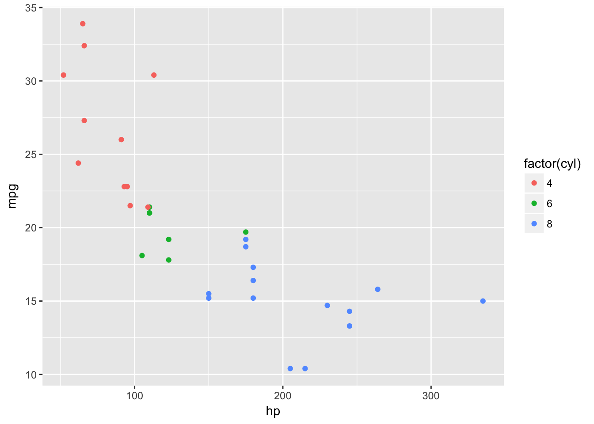
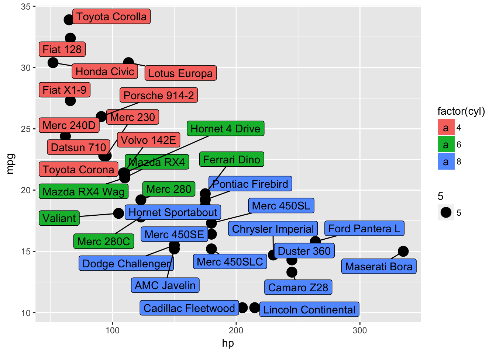

Class 1: Overview and data wrangling
Jay Hesselberth
2017-11-13
Goals for the class
Learn the basics of data import, processing, plotting, and report generation in RStudio.
Reach for RStudio instead of MS Excel / Prism etc as your go-to analysis software. Workflows in Rmarkdown are reproducible by yourself and others. Standard spreadsheet programs require human interaction (i.e., selecting cells, entering formulae) and are prone to mistakes.
RStudio Overview
We’ll cover the basic steps of data import and analysis within RStudio and will highlight some features of the software as we go.
The class has its own R package, so you should begin by loading it into your session. You may need to reinstall the package if we make updates.
# devtools::install_github('rnabioco/eda')
library(eda)
#> Welcome to the Exploratory Data AnalysisImport
There are two main ways to import data within RStudio. One is interactive, using the “Import Dataset” button in the Environment panel.
 The other is to use functions in
The other is to use functions in readr or readxl to load data on the console or within an RMarkdown report.
readr::read_tsv('XXX')
readxl::read_excel('XXX')Processing
The tidyverse is a collection of libraries that enable efficient data processing and visualization. You will probably start many analyses by loading the library:
library(tidyverse)
#> ── Attaching packages ──────────────────────────────────────────────────────────── tidyverse 1.2.0 ──
#> ✔ ggplot2 2.2.1 ✔ purrr 0.2.4
#> ✔ tibble 1.3.4 ✔ dplyr 0.7.4
#> ✔ tidyr 0.7.2 ✔ stringr 1.2.0
#> ✔ readr 1.1.1 ✔ forcats 0.2.0
#> ── Conflicts ─────────────────────────────────────────────────────────────── tidyverse_conflicts() ──
#> ✖ dplyr::filter() masks stats::filter()
#> ✖ dplyr::lag() masks stats::lag()Plotting
The tidyverse contains ggplot2, which you covered in your pre-requisites. Let’s make a simple plot in RStudio. Note that the plot appears in the “Plots” panel. From there, you can Zoom, Export to a file, or Publish on RPubs.
library(tidyverse)
ggplot(mtcars, aes(x = hp, y = mpg, color = factor(cyl))) + geom_point()
Real world example: Data collected in the 96-well plate format.
We’ll use tidy data principles to analyze some qPCR data.
Formatting data for efficient analysis
Reformatting your data into a “tidy” format is a useful practice that allows you efficiently manipulate and analyze data. We will start with some toy examples and then will reformat a commonly used data type from a quantitative PCR experiment.
Tidy data adopts three simple conventions:
- columns are variables
- rows are observations
- related data should be stored in separate tables
The tidyr package
The tidyr package has useful functions to format data for efficient analysis. See the cheat sheet for reference.
gather and spread
These are the workhorse functions in tidyr. Use gather when variables are in columns and you want to combine them.
# "wide" format has a variables as columns
mtcars_tbl
#> # A tibble: 32 x 12
#> name mpg cyl disp hp drat wt qsec vs am
#> <chr> <dbl> <dbl> <dbl> <dbl> <dbl> <dbl> <dbl> <dbl> <dbl>
#> 1 Mazda RX4 21.0 6 160.0 110 3.90 2.620 16.46 0 1
#> 2 Mazda RX4 Wag 21.0 6 160.0 110 3.90 2.875 17.02 0 1
#> 3 Datsun 710 22.8 4 108.0 93 3.85 2.320 18.61 1 1
#> 4 Hornet 4 Drive 21.4 6 258.0 110 3.08 3.215 19.44 1 0
#> 5 Hornet Sportabout 18.7 8 360.0 175 3.15 3.440 17.02 0 0
#> 6 Valiant 18.1 6 225.0 105 2.76 3.460 20.22 1 0
#> 7 Duster 360 14.3 8 360.0 245 3.21 3.570 15.84 0 0
#> 8 Merc 240D 24.4 4 146.7 62 3.69 3.190 20.00 1 0
#> 9 Merc 230 22.8 4 140.8 95 3.92 3.150 22.90 1 0
#> 10 Merc 280 19.2 6 167.6 123 3.92 3.440 18.30 1 0
#> # ... with 22 more rows, and 2 more variables: gear <dbl>, carb <dbl>
# gather variables and observations into `key` and `value` columns - so-called "long" format
xx <- mtcars_tbl %>% gather(key, value, -name)
xx
#> # A tibble: 352 x 3
#> name key value
#> <chr> <chr> <dbl>
#> 1 Mazda RX4 mpg 21.0
#> 2 Mazda RX4 Wag mpg 21.0
#> 3 Datsun 710 mpg 22.8
#> 4 Hornet 4 Drive mpg 21.4
#> 5 Hornet Sportabout mpg 18.7
#> 6 Valiant mpg 18.1
#> 7 Duster 360 mpg 14.3
#> 8 Merc 240D mpg 24.4
#> 9 Merc 230 mpg 22.8
#> 10 Merc 280 mpg 19.2
#> # ... with 342 more rows
# and convert back to "wide" format
xx %>% spread(key, value)
#> # A tibble: 32 x 12
#> name am carb cyl disp drat gear hp mpg
#> * <chr> <dbl> <dbl> <dbl> <dbl> <dbl> <dbl> <dbl> <dbl>
#> 1 AMC Javelin 0 2 8 304.0 3.15 3 150 15.2
#> 2 Cadillac Fleetwood 0 4 8 472.0 2.93 3 205 10.4
#> 3 Camaro Z28 0 4 8 350.0 3.73 3 245 13.3
#> 4 Chrysler Imperial 0 4 8 440.0 3.23 3 230 14.7
#> 5 Datsun 710 1 1 4 108.0 3.85 4 93 22.8
#> 6 Dodge Challenger 0 2 8 318.0 2.76 3 150 15.5
#> 7 Duster 360 0 4 8 360.0 3.21 3 245 14.3
#> 8 Ferrari Dino 1 6 6 145.0 3.62 5 175 19.7
#> 9 Fiat 128 1 1 4 78.7 4.08 4 66 32.4
#> 10 Fiat X1-9 1 1 4 79.0 4.08 4 66 27.3
#> # ... with 22 more rows, and 3 more variables: qsec <dbl>, vs <dbl>,
#> # wt <dbl>Each form has its advantages. For example, long format makes it easy to calculate summaries:
xx %>% group_by(key) %>% summarize(median(value))
#> # A tibble: 11 x 2
#> key `median(value)`
#> <chr> <dbl>
#> 1 am 0.000
#> 2 carb 2.000
#> 3 cyl 6.000
#> 4 disp 196.300
#> 5 drat 3.695
#> 6 gear 4.000
#> 7 hp 123.000
#> 8 mpg 19.200
#> 9 qsec 17.710
#> 10 vs 0.000
#> 11 wt 3.325Wide format is useful for plotting.
library(ggrepel)
ggplot(mtcars_tbl) +
geom_point(aes(hp, mpg, size = 5)) +
geom_label_repel(aes(hp, mpg, fill = factor(cyl), label = name))
separate, extract, and unite
separate takes a column on input and returns multiple columns, each with a new variable. For example, a column with year/month/day information can be separated into invidual columns.
dates
#> # A tibble: 120 x 1
#> date
#> * <chr>
#> 1 1999-Feb-1
#> 2 1999-Feb-2
#> 3 1999-Feb-3
#> 4 1999-Feb-4
#> 5 1999-Feb-5
#> 6 1999-Feb-6
#> 7 1999-Feb-7
#> 8 1999-Feb-8
#> 9 1999-Feb-9
#> 10 1999-Feb-10
#> # ... with 110 more rows
dates %>% separate(date, into = c('year', 'month', 'day'), sep = '-')
#> # A tibble: 120 x 3
#> year month day
#> * <chr> <chr> <chr>
#> 1 1999 Feb 1
#> 2 1999 Feb 2
#> 3 1999 Feb 3
#> 4 1999 Feb 4
#> 5 1999 Feb 5
#> 6 1999 Feb 6
#> 7 1999 Feb 7
#> 8 1999 Feb 8
#> 9 1999 Feb 9
#> 10 1999 Feb 10
#> # ... with 110 more rows
crossing and complete
crossing is useful to generate combinations of variables.
sample <- c('wt', 'mut')
gene <- c('IFN', 'ACTIN')
rt <- c('+', '-')
rep <- 1:3
tidyr::crossing(sample, gene, rep, rt)
#> # A tibble: 24 x 4
#> sample gene rep rt
#> <chr> <chr> <int> <chr>
#> 1 mut ACTIN 1 -
#> 2 mut ACTIN 1 +
#> 3 mut ACTIN 2 -
#> 4 mut ACTIN 2 +
#> 5 mut ACTIN 3 -
#> 6 mut ACTIN 3 +
#> 7 mut IFN 1 -
#> 8 mut IFN 1 +
#> 9 mut IFN 2 -
#> 10 mut IFN 2 +
#> # ... with 14 more rowsNaming samples.
All variables should be systematically listed in your sample names, i.e. name_rep_time_RT. Systematic naming makes it easy to programmtically extract relevant information.
Take an example like this, where the sample names are a combination of a genotype (WT and MT), a time point (0,4,8,24 hour), and a replicate (1,2,3), separated by a hyphen.
#> # A tibble: 24 x 2
#> sample.name value
#> * <chr> <int>
#> 1 MT-t0-1 81
#> 2 MT-t0-2 35
#> 3 MT-t0-3 89
#> 4 MT-t24-1 32
#> 5 MT-t24-2 24
#> 6 MT-t24-3 62
#> 7 MT-t4-1 67
#> 8 MT-t4-2 14
#> 9 MT-t4-3 49
#> 10 MT-t8-1 94
#> # ... with 14 more rowsBecause the samples are named systematically, it is easy to separate this information into individual columns
sample_info <- samples %>%
tidyr::separate(
sample.name,
into = c('sample', 'hour', 'rep'),
sep = "-"
)Now we can use dplyr and tidyr functions to manipulate the data.
sample_info %>% group_by(sample, hour) %>% summarize(mean(value))
#> # A tibble: 8 x 3
#> # Groups: sample [?]
#> sample hour `mean(value)`
#> <chr> <chr> <dbl>
#> 1 MT t0 68.33333
#> 2 MT t24 39.33333
#> 3 MT t4 43.33333
#> 4 MT t8 51.33333
#> 5 WT t0 52.66667
#> 6 WT t24 76.33333
#> 7 WT t4 55.00000
#> 8 WT t8 42.33333
sample_info %>% spread(hour, value) %>% mutate(t24_norm = t24 - t0)
#> # A tibble: 6 x 7
#> sample rep t0 t24 t4 t8 t24_norm
#> <chr> <chr> <int> <int> <int> <int> <int>
#> 1 MT 1 81 32 67 94 -49
#> 2 MT 2 35 24 14 27 -11
#> 3 MT 3 89 62 49 33 -27
#> 4 WT 1 97 79 3 72 -18
#> 5 WT 2 45 80 97 12 35
#> 6 WT 3 16 70 65 43 54Organizing samples.
How should you organize samples on your plate? Should -RT and +RT samples alternate? Where should I put my “no template” controls?
library(eda)
qpcr
#> # A tibble: 145 x 6
#> well fluor target content sample cq
#> <chr> <chr> <chr> <chr> <chr> <dbl>
#> 1 A01 SYBR IFNbeta Unkn-01 Control 31.82551
#> 2 A02 SYBR IFNbeta Unkn-02 Control_noRT 36.14470
#> 3 A03 SYBR IFNbeta Unkn-03 5ppp 18.45676
#> 4 A04 SYBR IFNbeta Unkn-04 5ppp_noRT NaN
#> 5 A05 SYBR IFNbeta Unkn-05 3p1 19.01628
#> 6 A06 SYBR IFNbeta Unkn-06 3p1_noRT NaN
#> 7 A07 SYBR IFNbeta Unkn-07 3p2 19.10928
#> 8 A08 SYBR IFNbeta Unkn-08 3p2_noRT NaN
#> 9 A09 SYBR IFNbeta Unkn-09 2p 22.79299
#> 10 A10 SYBR IFNbeta Unkn-10 2p_noRT NaN
#> # ... with 135 more rowsqpcr_tidy <- qpcr %>%
separate(sample, into = c('ligand', 'RT'), sep = '_', fill = 'right') %>%
select(-fluor, -content, -well) %>%
mutate(RT = is.na(RT))Exercises
- Reformat the
datasaurusdataset so that the following plotting code works:
datasaurus_tidy %>%
ggplot(aes(x = x, y = y)) +
geom_point() +
facet_wrap(~ dataset)What does this plot tell you?
Too Easy?
If you found those exercises too easy, try these:
- Tidy the
anscombedata set. Your tidy data should look like:
#> # A tibble: 44 x 3
#> set x y
#> <chr> <dbl> <dbl>
#> 1 1 4 4.26
#> 2 1 5 5.68
#> 3 1 6 7.24
#> 4 1 7 4.82
#> 5 1 8 6.95
#> 6 1 9 8.81
#> 7 1 10 8.04
#> 8 1 11 8.33
#> 9 1 12 10.84
#> 10 1 13 7.58
#> # ... with 34 more rowsCalculate summary statistics in your tidy
anscombedata. Calculaten,meanfor eachxandyvariable in the sets. Calculate thecorbetweenxandyfor each set. What do you infer from these summary statistics?Plot the tidy
anscombedata. Plot eachx/ypoint on separate facets for each set, and plot a smoothing line. Examine the plots. How do they compare to the summary statistics?
ggplot(anscombe_tidy, aes(x, y)) +
geom_point() +
facet_wrap(~set) +
geom_smooth(method = 'lm', se = FALSE)Quiz
Create an RMarkdown document and answer the questions from the Exercises section. Submit your final document as “Quiz 1” by Thurs at 10 PM.
Your submitted document must knit to HTML without errors. I.e., when you click the “Knit” button, the document should build and display and HTML page.
Resources
- This slide deck from Jenny Bryan has useful tips for naming files that are also applicable to sample names.